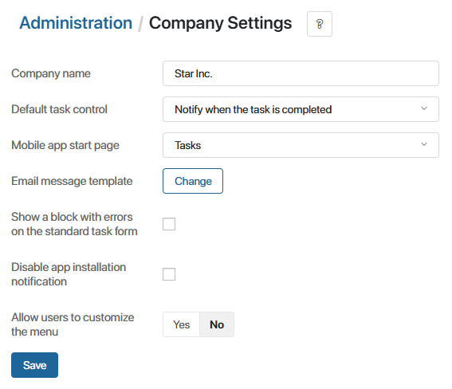
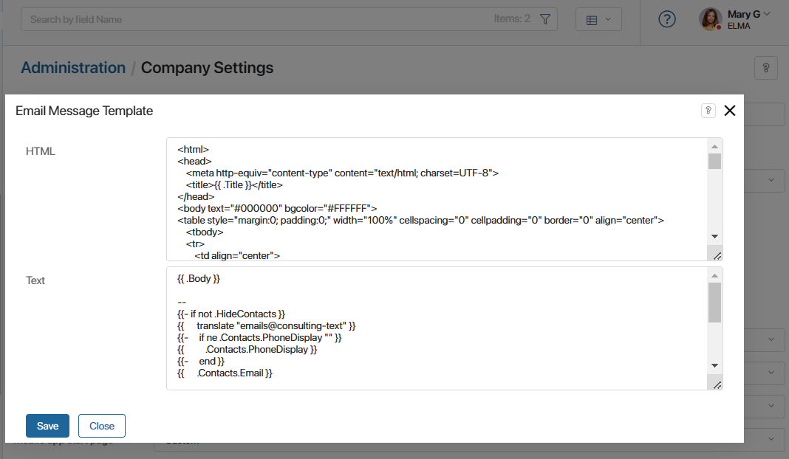

In the Company Settings workspace, you can edit the following parameters:
- Company name.
- Default task control option.
- Start page of the BRIX mobile application.
- Template for system emails.
- Display a block with errors on the standard task form.
- Display information about installing the application.
- Personal settings for workspace menu.
начало внимание
Only users included in the Administrators group have access to the Company Settings.
конец внимание
To go to the workspace, from the home page, select Administration > Company Settings from the left menu.

To apply any changes that you make, click Save at the bottom of the form.
Company name
When you create a new company on the BRIX website, you specify its name. Later you can edit the name on this page. Users see the company name:
- In the email with an invitation to the company.
- When logging in to BRIX.
Default task control
You can set up a suitable task control. There are several options:
- Send for evaluation. A completed task is sent for evaluation to the author.
- Notify when the task is completed. The author receives a notification when the task is completed.
- Not required. Task control is not required, the task is completed without evaluation and notifications.
All the tasks created outside of business processes will have the selected control type, but you can change it manually when creating a new task.
Mobile app start page
You can select the workspace that will open as the start page in the BRIX mobile app. To specify the exact page or app, select the Custom option. Then, in the appeared field, specify the path that is displayed after the company’s main URL.
Email message template
When working with BRIX, users receive different emails to the address specified when registering in the system. For example, invitations to the company, password reset emails, confirmation codes for two-factor authentication, etc.
The same template is used for all system emails. You can edit it using HTML language or plain text.

The text template is used in email clients that do not support HTML markup.
Make the necessary changes and save the settings.
Please note that the {{.Body}} value is filled by the service sending the email and contains the main information of the message. For example, a link with an invitation to the company or a two-factor authentication code.
Show a block with errors on the standard task form
When a user creates a task, the values of the form fields are validated. The errors are marked red.
To have a list of validation errors appear at the top of the form, enable the Show a block with errors on the standard task form option.
Hide BRIX application installation options
The BRIX interface contains information about installing the application:
- Banner with a recommendation to download the mobile or desktop version.
- The Application tab in the user profile settings.
You can hide all mentions of the application and its configuration options. To do that, enable the Disable app installation notification option.
Allow users to customize the workspace menu
To allow all users to customize the workspace display in the left menu, set the Allow users to customize the menu option to Yes.
Начало внимание
This options becomes available if the enableCustomMenu feature flag is enabled. For more information, see Modify BRIX Enterprise parameters and Modify BRIX Standard parameters. If you are using the SaaS version, contact your BRIX rep to enable the feature flag.
Конец внимание
Once this option is activated, all the employees will see the icon in the left menu. By clicking on it, they can open the list of available workspaces and can reorder them or hide the ones that they do not use.